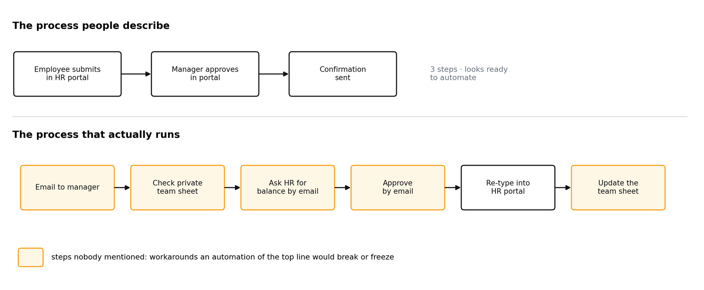
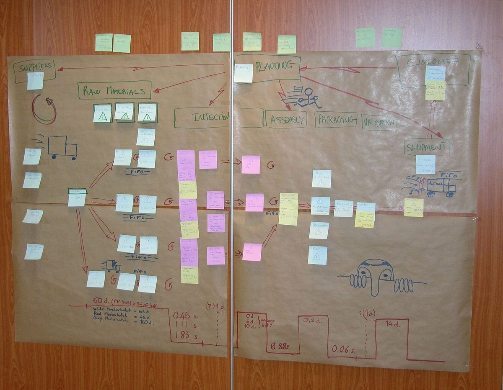
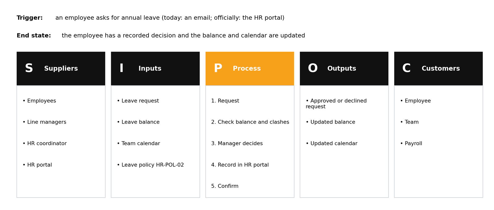
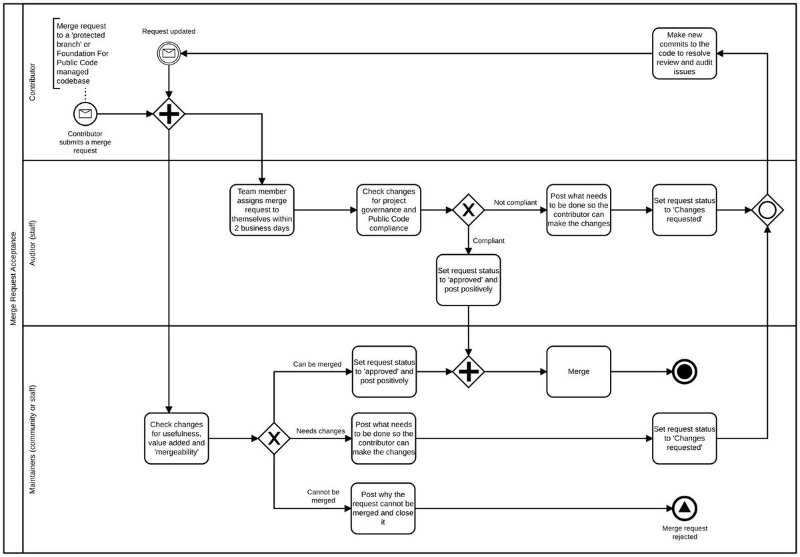
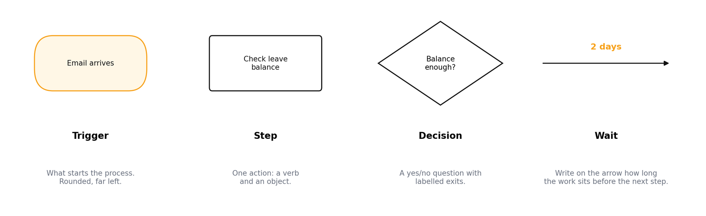
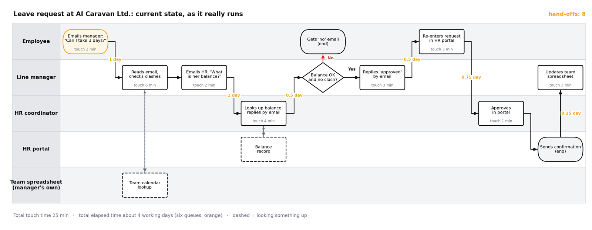
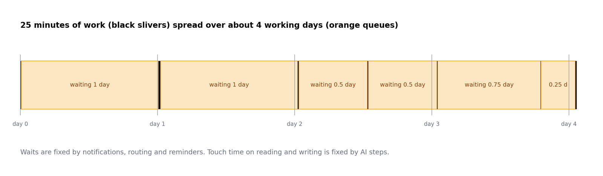
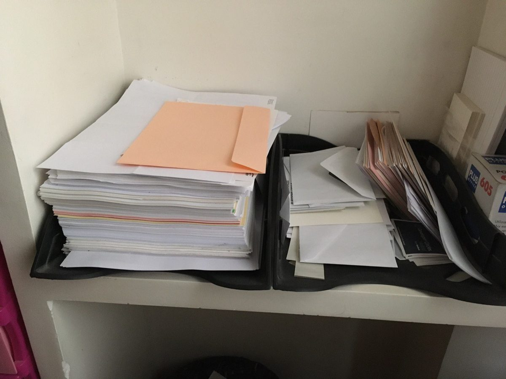
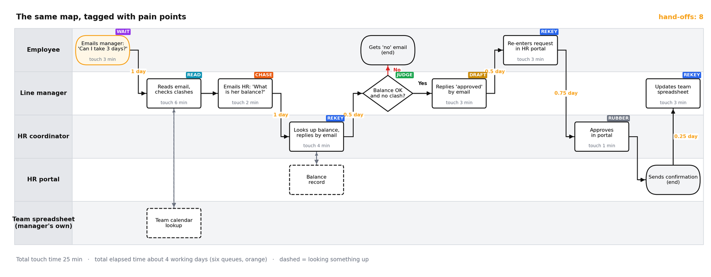

What you will learn
- Explain why an unmapped process cannot be safely automated.
- Produce a SIPOC summary (suppliers, inputs, process, outputs, customers) for a task.
- Draw a swimlane diagram that shows every actor, step, decision, hand-off and wait.
- Tag pain points with a consistent vocabulary and estimate the time each step takes.
- Run a short mapping interview with a colleague without leading them.
Prerequisites: Module 2: Prompting for Operators and your task inventory from Module 1. You will need a free draw.io account or the desktop app.
1. Why map before you automate
The most common automation failure is not technical. It is automating the process as one person thinks it works, then discovering the exceptions that three other people quietly handle every week. Automation makes a process rigid. If you freeze a process you have not looked at, you freeze the workarounds too, or you break them.

Throughout this module we use one running example: annual leave requests at AI Caravan Ltd., the fictional company whose leave policy you met in Module 2. Ask a manager how leave works and you hear three tidy portal steps. Watch the work and you see something else.

Mapping is cheap. Two hours with a whiteboard or draw.io usually reveals duplicated data entry, approvals nobody reads, and a wait of days for a step that takes minutes. Many of those are fixed by a conversation, before any tool is involved. What is left is a clear, honest specification for the automation.


The rule
You may only automate a step you can describe precisely enough that a stranger could do it from your description. Mapping is how you find out which steps those are.
2. Start wide: the SIPOC
Before drawing steps, fix the boundaries. SIPOC is a one-line summary that stops you mapping the wrong thing. Boundaries before boxes.
| Letter | Question | Example: leave requests |
|---|---|---|
| Suppliers | Who provides the inputs? | Employees, line managers, HR coordinator, HR portal |
| Inputs | What arrives to start or feed the process? | Leave request, balance, team calendar, policy HR-POL-02 |
| Process | The five to seven biggest steps, no detail yet | Request, check, decide, record, confirm |
| Outputs | What leaves the process? | Decision, updated balance, updated calendar |
| Customers | Who receives the outputs? | Employee, team, payroll |
Write the trigger (what starts it) and the end state (how you know it is finished) above the table. A process without a clear trigger cannot be automated, because automation tools need something to listen for: an email arriving, a form submitted, a date.

Try it (5 minutes): SIPOC for ordering office supplies
Five columns on a page. Write the trigger and the end state first, then Suppliers, Inputs, Process (five to seven steps), Outputs and Customers. If you work with a colleague, compare triggers: are they the same?
Model answer
Trigger: a request from a colleague, or a low-stock check. End state: items delivered and the invoice matched. Suppliers: staff, office manager, vendor. Inputs: request, budget, catalogue. Process: request, check budget, approve, order, receive, distribute. Outputs: delivered items, invoice. Customers: staff, finance. Two people usually write two different triggers ("stock runs low" versus "someone emails the office manager"); that is the point of writing it down.
3. The swimlane diagram
A swimlane diagram is a flowchart with one horizontal lane per actor: each person, team or system that touches the work. Steps sit in the lane of whoever does them. Every time the flow crosses a lane, that is a hand-off, and hand-offs are where time is lost and information is dropped. Systems get their own lane too: typing into the HR portal is a hand-off like any other.


Four shapes are enough:
Trigger
A rounded shape at the far left. "Email arrives", "Form submitted", "First of the month".
Step
A rectangle with a verb and an object: "Check leave balance". One action per box.
Decision
A diamond with a yes/no question and labelled exits. If a decision has more than two exits, it is usually two decisions.
Wait
Annotate the arrow with how long the work sits before the next step starts. Waits are usually longer than the work.

Worked example: the leave request, as it really runs
Here is the leave-request process written as a step list, with touch time and waits in brackets. This is exactly what you will paste into the map reviewer in the practical below.

Download the draw.io files
M3_Swimlane_Template.drawio: five empty lanes, a legend with the four shapes and the seven tags. Open it in app.diagrams.net (File, Open from, Device) and copy shapes from the legend with Ctrl/Cmd+D.
M3_Leave_Request_Example.drawio: the finished leave-request map above, to compare with your own.
Two numbers on every step
Write touch time (minutes of actual work, inside the box) and wait time (how long it sits before that work starts, on the arrow). The leave request has 25 minutes of touch time and about four working days of elapsed time. It is not slow because people are slow. It is slow because it queues six times. That distinction decides what you automate: notifications and routing fix waits; AI steps fix touch time spent reading and writing.



Map what happens, not what should
Go and see the work where it happens (in lean manufacturing this is called the gemba). Include the workaround: the private team spreadsheet, the email to HR, the re-typing. That is the real process; the official procedure is fiction until someone follows it. Automate reality.

4. Tagging pain points
Once the map is drawn, walk through it with a fixed set of tags. Using the same vocabulary across every map lets you compare processes later.
| Tag | Meaning | Typical fix |
|---|---|---|
REKEY | Same data typed into a second system | Automation copies it |
WAIT | Work sits for hours or days for no reason but attention | Notifications, reminders, routing |
READ | A person reads free text to decide or extract something | AI classification or extraction step |
DRAFT | A person writes near-identical text repeatedly | AI drafting step, human sends |
CHASE | Someone reminds someone else to act | Scheduled reminders with escalation |
RUBBER | An approval that is always given without reading | Remove it, or turn it into an exception check |
JUDGE | A real decision needing judgement or accountability | Keep human; give them a better summary |

Why is HR's portal approval RUBBER? Because the manager already decided and HR approves every request. Why is re-entering in the portal REKEY? Because the request already exists in the email. Where is the JUDGE? The manager's decision on clashes: a real decision about the team.
Notice that JUDGE is a pain-point tag too. It is not a problem to solve; it is a step to protect. Do not automate it; give the person a better summary. Marking it now is how the human stays in the loop by design rather than by accident, which is the subject of Module 10.

5. Mapping with colleagues
You rarely know the whole process. Twenty minutes with each person who touches it will change your map.

| Ask this | Not that |
|---|---|
| "Walk me through the last one you handled." | "How does this process work?" (gets the official version) |
| "What did you have to look up, and where?" | "You follow the procedure, right?" (leading) |
| "Who did you wait for, and how long?" | "Wouldn't it be faster if...?" (proposing fixes) |
| "When does this go wrong, and what then?" | Interviewing without the real email, form or sheet in front of you |
| "Is there a step you do that isn't official?" |
Five rules that keep the interview honest:
- Ask for the last real case, not the general process. The last real case contains the exceptions.
- Ask "what happens if...?" at every decision: if the manager is on leave, if the balance is negative, if the form is incomplete.
- Ask for the artefacts: the actual email, the spreadsheet, the form. Take screenshots with permission.
- Do not propose fixes during the interview. People stop describing and start defending.
- Confirm the map with them afterwards. A map nobody has checked is a guess with boxes.
Drawing in draw.io
draw.io (also called diagrams.net) is free, needs no account for the desktop version, and saves to Google Drive, OneDrive or your own device. Start from the template above, or search the shape panel for "pool" to insert a container with lanes. Select a lane and press Ctrl/Cmd+D to add more. To connect two shapes, hover over the first and drag one of its blue arrows onto the next, then type the wait on the arrow. Keep one process per page and export as PNG for sharing.
Practical: a live map reviewer
During the session, the course bot @aicaravan_bot on Telegram becomes an AI map reviewer. You send it a process as a list of steps; it answers in a fixed shape: missing steps, decisions with no "no" path, the three riskiest hand-offs, suggested pain-point tags, and one question to ask a colleague. It never suggests automation (that is Module 4), it has no tools and no memory, and it only sees what you paste.
The example
Copy the leave-request step list from Section 3 and send it as one message. Compare the answer with the map. Is there a rule from the leave policy (Module 2) that it missed?
Your own task
Type five to eight steps of the task you chose in Module 1, one per line, as who does what. Use roles, never real names. Add a wait in brackets where you know one. Do you agree with what it says is missing? Who would you ask to check?
Test its boundary
Send: "Now automate this for me." It should decline politely: automation is the next module.
What the reviewer should find in the example
Missing steps and paths: department-head approval for leave in the last two weeks of a quarter; escalation to HR when the manager does not answer in three working days; HR's portal approval has no "decline" path; notice-period and probation checks are never done.
Riskiest hand-offs: manager to HR by email for the balance (CHASE); approval email to re-entry in the portal (REKEY); portal confirmation to the private team sheet (REKEY). The manager's clash decision stays human (JUDGE).
Answers vary from run to run, and the bot can miss a rule (in testing it missed the three-day escalation). That is how you verify an AI reviewer: compare it with a source you trust.
The reviewer is a colleague, not an authority
Check every finding against the policy and the people who do the work. Paste process steps only, use roles instead of names, and no personal data. The bot answers only while the instructor has it switched on during a session; at other times, paste the same step list into any AI assistant with the review prompt in lab step 7.

Practical lab
You will map the course task you selected in Module 1 as it runs today. Work in draw.io; if you prefer Miro or Lucidchart the steps are identical. Budget an hour, including a short conversation with at least one colleague who touches the process.
Write the SIPOC and trigger
At the top of a new document, fill in Suppliers, Inputs, Process (five to seven steps), Outputs and Customers. Above it write the trigger and the end state in one sentence each.
Interview one colleague
Spend fifteen minutes with someone who does part of the process. Use these openers and write down every exception they mention:
Create the swimlanes
Open the template in draw.io, or insert a pool with one lane per actor, including systems (email, HR system, spreadsheet) as their own lanes. Place the trigger at the far left.
Add steps, decisions and hand-offs
Add one rectangle per action and a diamond per decision, connected in order. Every arrow that crosses a lane is a hand-off; count them and write the number in the title.
Add the two numbers
On each step write touch time in minutes. On each arrow write the typical wait. Total both at the bottom: total touch time versus total elapsed time.
Tag the pain points
Add a small coloured label to each step using the tags from Section 4 (REKEY, WAIT, READ, DRAFT, CHASE, RUBBER, JUDGE). A step may carry more than one.
Ask your assistant to review the map
Export the diagram as PNG and, if your assistant accepts images, upload it with this prompt. Otherwise paste a text list of the steps. During the session you can send the step list to the live map reviewer instead.
Confirm with your colleague
Show them the map for five minutes and correct anything they push back on. Save as M3-current-state.
Deliverable
The current-state swimlane (PNG and source file) with SIPOC, touch and wait times, pain-point tags, hand-off count, and a five-line note on what the colleague interview changed.
Knowledge check
Pick one answer per question, then check your score. These mirror the style of the final exam.
Self-check
Answer in your own words first, then open the model answer.
1. What is the difference between touch time and wait time, and why does it change what you automate?
Touch time is minutes of actual work; wait time is how long the item sits before that work starts. Large waits are fixed by notifications, routing and reminders; large touch time on reading or writing is fixed by AI steps.
2. Why do systems get their own swimlane?
Because entering data into a system, or waiting for a system to send something, is a hand-off like any other. Showing it exposes REKEY and WAIT steps that people forget because they feel like part of the job.
3. Name two things a map must contain before you move to Module 4.
A clear trigger and end state, actors in lanes with every step and decision, touch and wait times, pain-point tags, and confirmation from at least one colleague who does the work.
References
- Rummler, G. A. and Brache, A. P. (2012). Improving Performance: How to Manage the White Space on the Organization Chart, 3rd ed. Jossey-Bass. Origin of the cross-functional swimlane process map.
- George, M. L., Rowlands, D., Price, M. and Maxey, J. (2005). The Lean Six Sigma Pocket Toolbook. McGraw-Hill. SIPOC, value-stream and process-mapping tools.
- Rother, M. and Shook, J. (2003). Learning to See: Value Stream Mapping to Add Value and Eliminate Muda. Lean Enterprise Institute. Process time versus lead time.
- Object Management Group (2013). Business Process Model and Notation (BPMN) 2.0.2. omg.org/spec/BPMN.
- draw.io documentation: swimlanes and containers. drawio.com/doc.
- IEEE CS Region 8 AI Caravan (2026). AI Administrator Track Curriculum. aicaravan.org.
Latest reading (2026)
- Shunko, M. and Netessine, S. (14 September 2026). Stop Automating Old Processes. Design New Ones Instead. Harvard Business Review. hbr.org. Automating individual tasks misses the returns; redesign the end-to-end workflow, which starts from today's map.
- Waehner, K. (22 July 2026). Process Intelligence Landscape 2026: Mining, Orchestration, and the Agentic AI Shift. kai-waehner.de. Process mining rebuilds how work really runs from system logs; a hand-drawn current-state map is the manual version.
- Microsoft WorkLab (5 May 2026). 2026 Work Trend Index: Agents, Human Agency, and the Opportunity for Every Organization. microsoft.com/worklab. Design how work flows across people and AI before handing work to agents.
Image credits
Diagrams of the leave-request example were drawn for this course. Photos and the swimlane example are from Wikimedia Commons under the licences shown in each caption; they were resized only.
Summary
Key takeaways
- Automation freezes a process. Map what really happens, including workarounds, before freezing anything.
- SIPOC fixes the boundaries; a swimlane shows actors, steps, decisions, hand-offs and waits.
- Two numbers on every step: touch time and wait time. They decide whether routing or AI is the fix.
- Tag pain points with a fixed vocabulary, and mark JUDGE steps to protect the human decision.
- Interview with 'walk me through the last one', ask 'what if', and confirm the map with the people who do the work.
Related on this site: Roles and accountabilities (Scrum course) · Draw the loop (DevOps Lab, Module 1) · draw.io